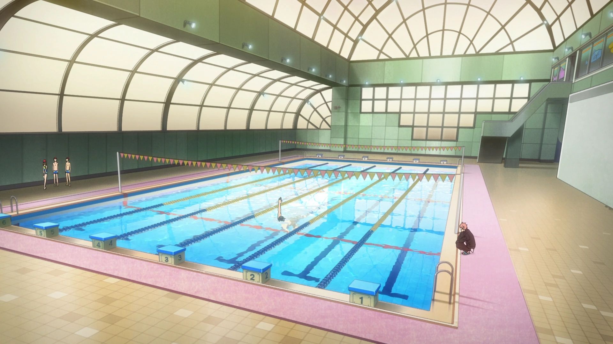
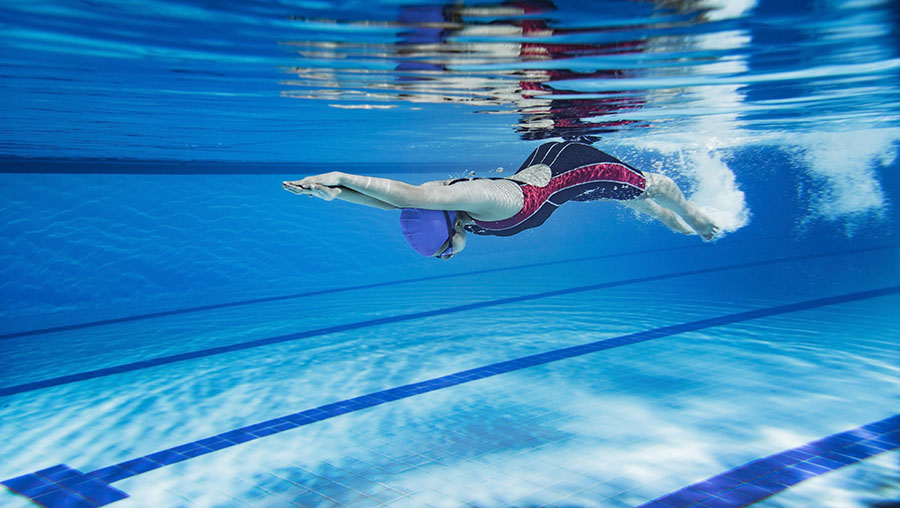

Welcome to Swimming club!
The ANB Swim Club has produced superb competitive swimmers for over 10 years. We are a non-profit, parent-run organization and have a long list of Provincial, National and International calibre competitors. The Club is affiliated with Swim Ontario and Swimming Canada and provides the local community with a full program of pre-competitive and competitive swim training.

It is our Club's mission to provide opportunities to all swimmers, regardless of ability, to be the best that they can be and reach their highest level of achievement. Swimmers are required to work hard at the sport, show continuing improvement and develop discipline and team spirit under the direction of their professional coaches.

Phone number: +1 *** *** ***
Mail: anbhighschool@gmail.com/anbswimmingclub@gmail.com